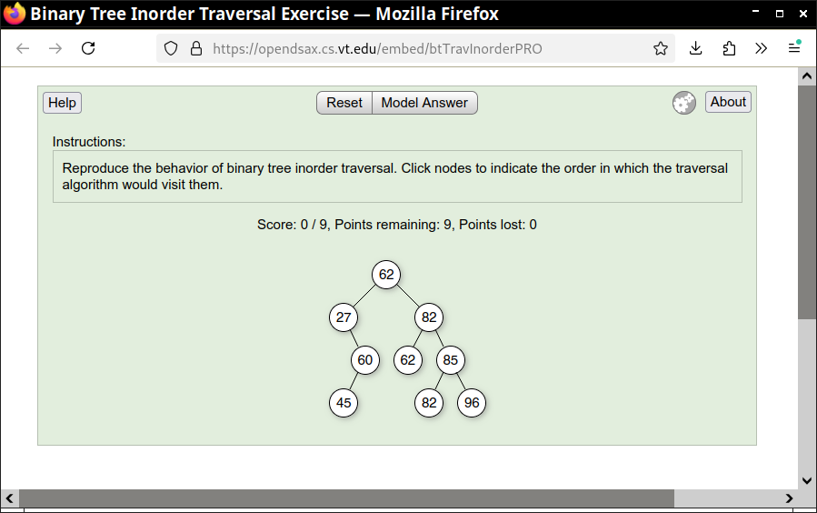
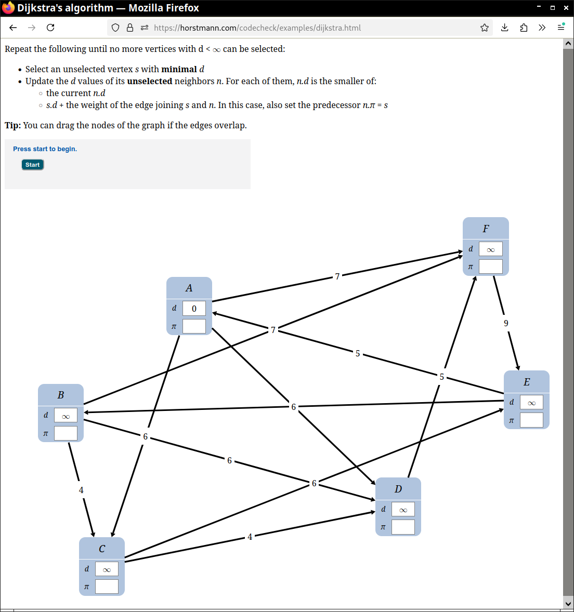
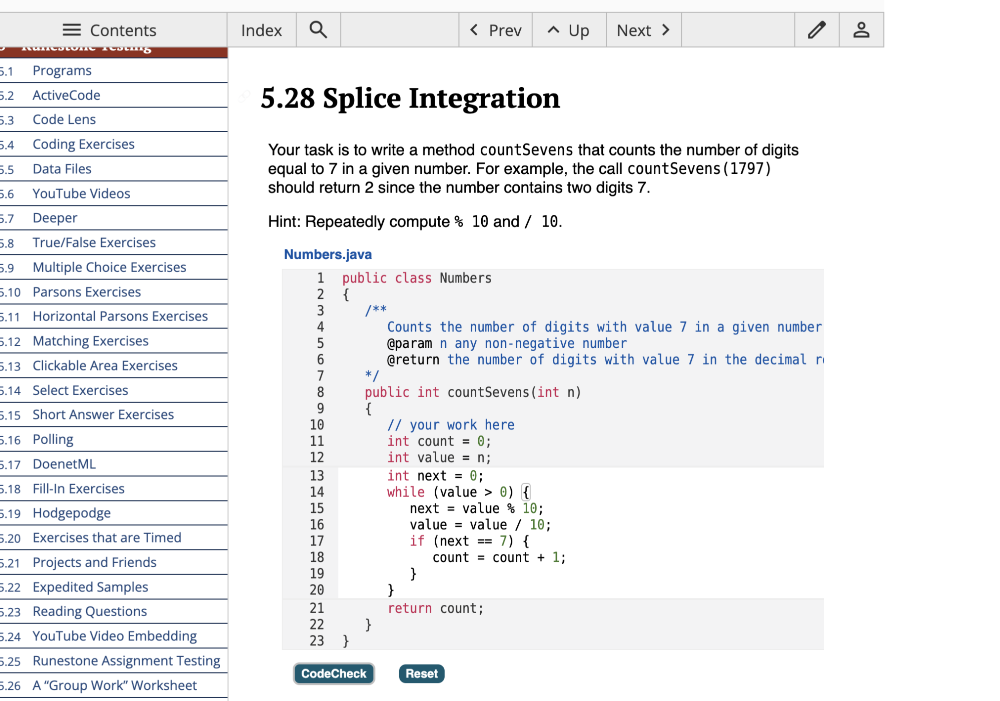

SPLICE iframe Protocol: Rationale
An ever-increasing amount of “smart learning content” is authored in HTML+CSS+JavaScript. In the field of computer science, examples are programming puzzles, code tracers, algorithm visualizers, and automata simulators. Examples from other fields include geometry construction sets and molecule viewers. Smart content goes beyond mere visualization. Users are expected to actively interact with the content, for learning or testing purposes.
As a typical example, consider this activity for practicing an algorithm: (Source: https://horstmann.com/codecheck/examples/dijkstra.html)

Here is another sample from the SPLICE catalog.

Note that these activities only make use of HTML, CSS, and JavaScript. Activity authors need not provide any server-side logic, which greatly simplifies the development of such smart learning content.
Now consider an instructor who wants to include these activities in an assignment, together with other activities from yet other activity authors.
The instructor would make use of a “learning system” that presents the assignment to students and records student progress and scores.
Here is a screen shot of one such system. (The coding task is third party smart learning contents.)

In order to record student progress and scores, the learning system requires a communication protocol between the smart learning content and the learning system.
Learning system protocols such as LTI can be used for this purpose, but they burden the authors of smart learning content with the requirement to implement complex server-side logic.Some learning systems use proprietary protocols, restricting the ability to mix smart learning content from different authors.
The SPLICE protocol is focused on aggregating content from arbitrary sources through the use of iframes. Iframes provide isolation, enabling each content author to choose libraries and styling that is appropriate for their purpose. We define a lightweight protocol between the content iframe and the learning system page that embeds it.
The protocol defines how smart learning content signals user activity and restores state from a prior interaction.
The protocol is currently implemented by these learning systems:
- Runestone Interactive
- OpenDSA
- Mastery Grids
- CodeCheck Assignments
Smart content supporting the protocol include:
- JSAV
- CodeCheck code completions and tracer problems
- jsParsons
If you are an implementer of a learning system and would like to be able to aggregate a wealth of smart learning content from multiple authors, your task is easy. Provide an activity type in which a iframe is loaded, and communicate with the iframe using the SPLICE iframe protocol. If you are an author of smart learning content, and would like your content to be usable in multiple learning systems, your task is even easier. We provide a simple JavaScript API for communicating with the learning system that uses the protocol. Read the specification for the details.